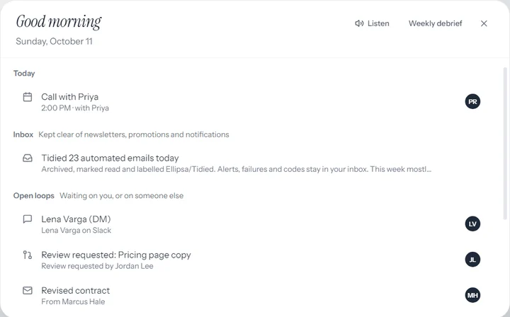
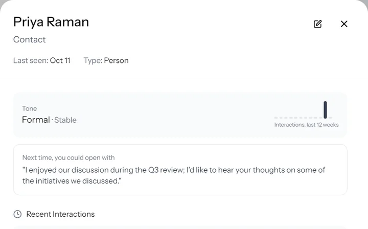
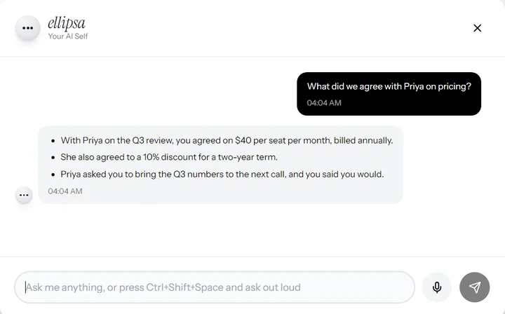
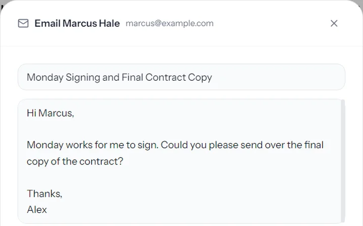
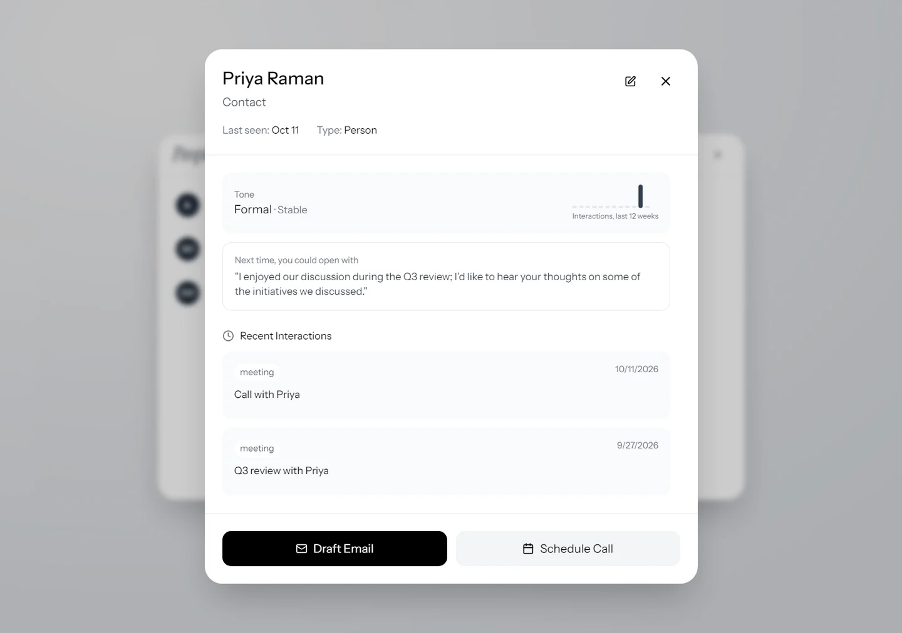
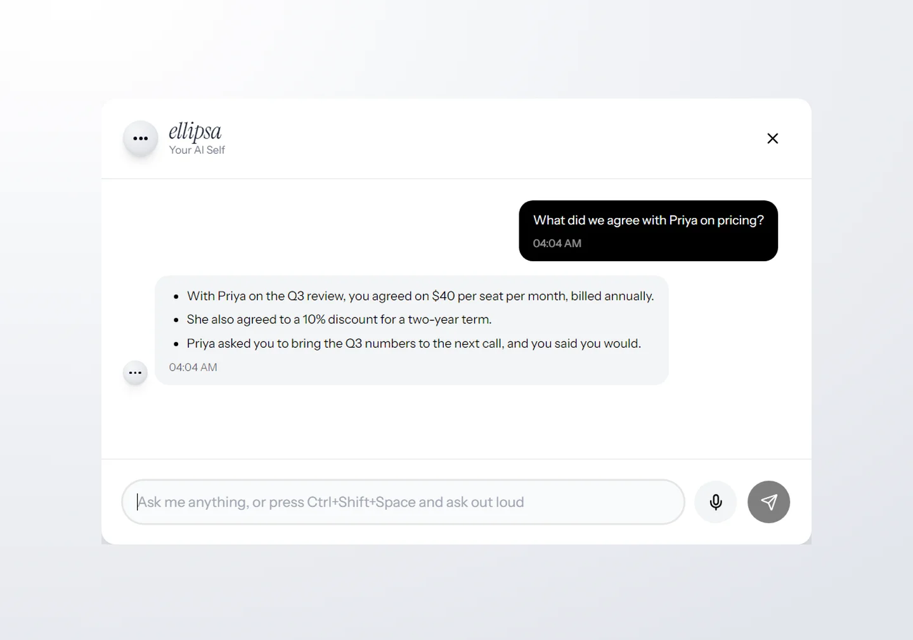
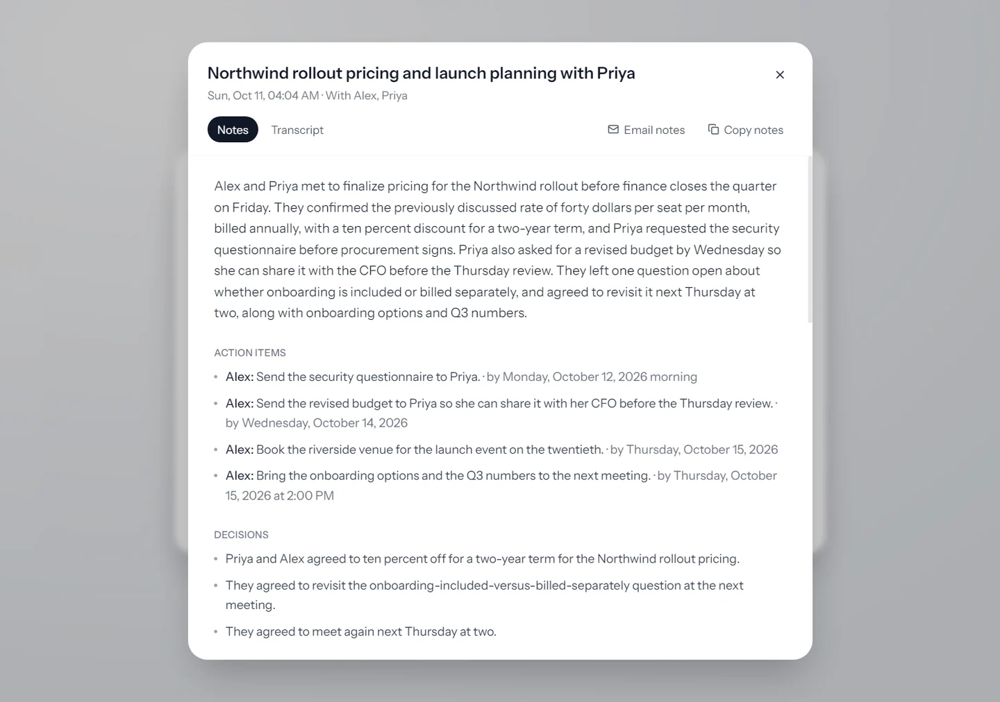
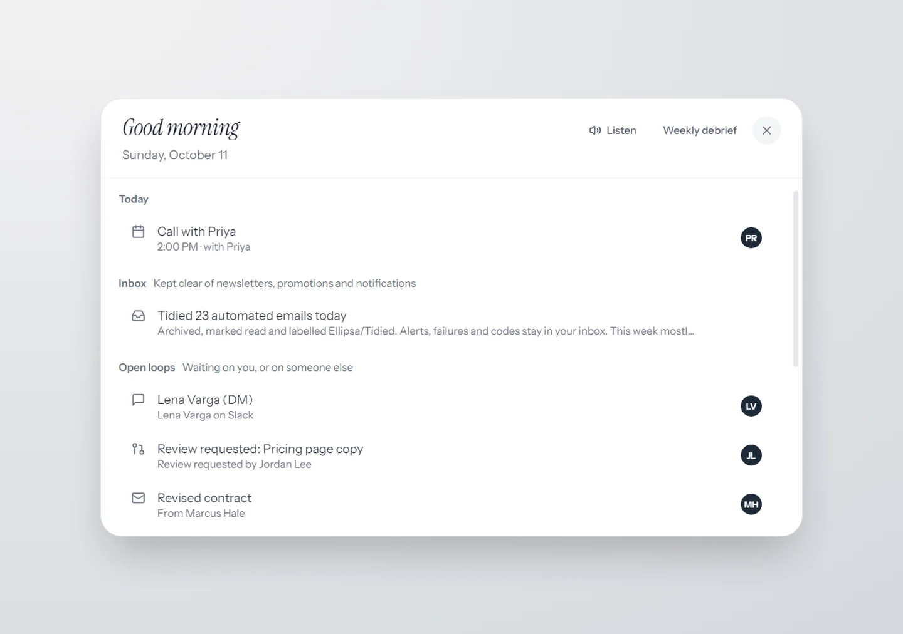
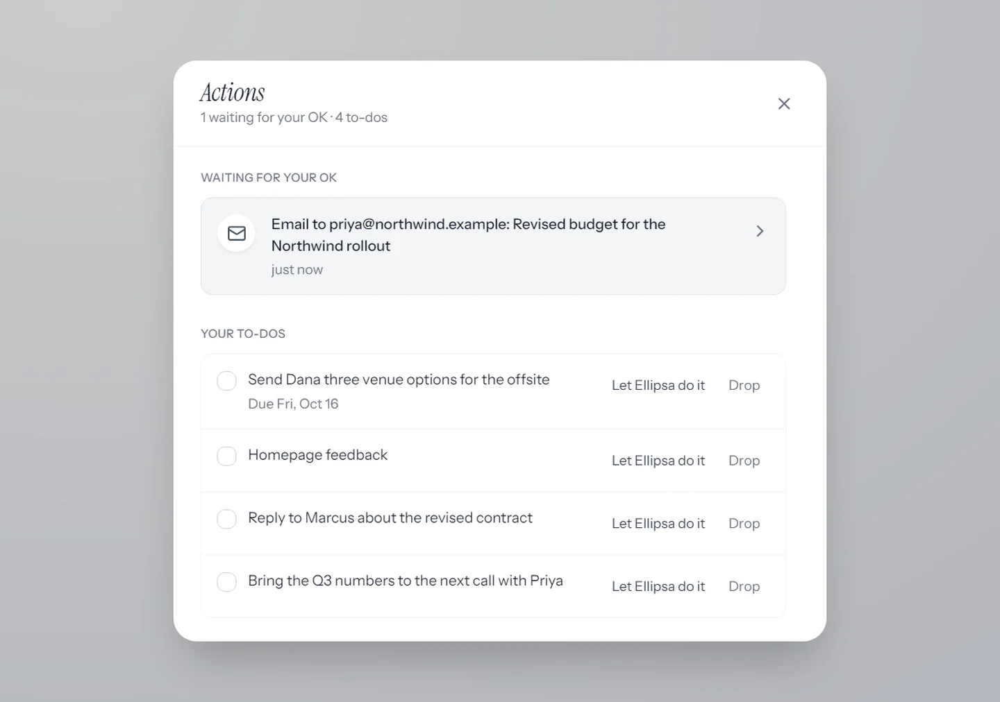

you said you’d get back to them…
Your AI self. Ellipsa remembers every person and promise across your email, calendar, Slack and calls, and nudges you before anything slips.
one day, nothing dropped.

Your briefing
Marcus is waiting on a reply, and you told Dana you’d send venue options by Friday. It can read it to you while you make coffee.

Before the call
Priya asked for the Q3 numbers last time, and you said you’d bring them. Her card shows what each of you promised.

During it
Ask out loud, “what did we agree on pricing?”, and the answer comes from your own records. No bot joins the call.

After
Your follow-up is drafted in your own voice and the next call is booked. It waits for your yes.



it sits in on your calls. nobody else does.
Hold the button and Ellipsa listens to the call on your own computer. No bot joins, and the dots turn red so you always know. It’s everything your notetaker does, plus your memory.
-

Ask it anything, mid-call
“What did we agree on pricing?” The answer comes from your own email, notes and past calls while you’re still talking.
-

Hang up. It’s all written down.
The full transcript, who said what, and notes topic by topic: decisions, action items with owners and dates, open questions. Names come from the invite or the people on your screen. Email the notes to everyone on the call in one click.
Call audio is streamed for transcription. To name who said what, it is kept encrypted on your computer until your notes are written, then deleted. No headphones? It tells your voice from the call coming out of your speakers.
inbox zero, everywhere you talk.
Newsletters, promotions and notifications are cleared out of your inbox on their own, labelled so nothing is lost. What’s left is what needs you: Gmail, Slack and GitHub, in one short list.
- Noise, gone. Archived and marked read within minutes, never deleted. One click puts it back.
- Alerts stay. Failed builds, security alerts, sign-in codes and declined payments stay in your inbox.
- People, never touched. Mail from a person always stays where it is.
- One list. Unanswered email, Slack messages waiting on you, reviews you were asked for. Reply, follow up, or mark it read without replying.

it does the work. you say yes.
Ellipsa doesn’t stop at reminding you. It acts, and anything that sends or changes something waits for your approval, step by step.
- Replies drafted in your voice, sent when you say so
- Calls booked in your free slots, invites sent
- Slack messages and replies
- Notion pages and database entries
- GitHub issues, comments and pull requests
- Google Docs and Sheets, written for you

Every action item you’re given lands in one list, the late ones first. Approve once with “always allow” and it stops asking for that kind of thing. You can take it back any time in Settings.
ask it like you’d ask a colleague.
what did I promise Dana this week?
Three venue options for the offsite, by Friday. You said it in Tuesday’s email.
who haven’t I replied to?
Marcus, about the contract, for 9 days. And Priya’s Q3 question.
draft something to Marcus
Done, in your voice. It’s waiting for you to read before it sends.
see it work.
it remembers. only for you.
- On your computer. Your memory is stored on your own computer, encrypted, with daily encrypted backups.
- Your yes first. Nothing is sent, booked, changed or deleted until you approve it.
- No bot in your calls. Nobody joins the meeting. Call audio is kept, encrypted, only until your notes are written.
To answer you, Ellipsa sends only what a question needs to OpenAI, through Ellipsa’s relay, or, in private mode with your own OpenAI key, straight from your computer. The privacy policy sets out exactly what goes where.
works with what you already use.
Several Google accounts at once. Your memory also works in Claude Desktop, Claude Code, Cursor, VS Code, Windsurf, Gemini CLI, Codex and LM Studio.